Customizing incidence plots
Source:vignettes/customizing_incidence_plots.Rmd
customizing_incidence_plots.RmdThis vignette provides some tips for the most common customisations
of graphics produced by plot.incidence2() and
facet_plot.incidence2(). Our graphics use ggplot2, which is
a distinct graphical system from base graphics.
We try to provide reasonably good, out of the box, customisation via function arguments. For advanced customisation, however, it may be better to first convert to a data.frame and then proceeding to work directly with ggplot2.
Note that plotting functionality only works with objects created with
incidence() not build_incidence(). This is due
to incidence() using the grates allowing us
to rely on some of it’s behaviour within out plotting functions. For
objects created with build_incidence() you can again use ggplot2
directly.
Example data: simulated Ebola outbreak
This example uses the simulated Ebola Virus Disease (EVD) outbreak from the package outbreaks.
First, we load the data, compute the weekly incidence and initially group by gender and hospital:
library(outbreaks)
library(incidence2)
dat <- ebola_sim_clean$linelist
str(dat)
#> 'data.frame': 5829 obs. of 11 variables:
#> $ case_id : chr "d1fafd" "53371b" "f5c3d8" "6c286a" ...
#> $ generation : int 0 1 1 2 2 0 3 3 2 3 ...
#> $ date_of_infection : Date, format: NA "2014-04-09" ...
#> $ date_of_onset : Date, format: "2014-04-07" "2014-04-15" ...
#> $ date_of_hospitalisation: Date, format: "2014-04-17" "2014-04-20" ...
#> $ date_of_outcome : Date, format: "2014-04-19" NA ...
#> $ outcome : Factor w/ 2 levels "Death","Recover": NA NA 2 1 2 NA 2 1 2 1 ...
#> $ gender : Factor w/ 2 levels "f","m": 1 2 1 1 1 1 1 1 2 2 ...
#> $ hospital : Factor w/ 5 levels "Connaught Hospital",..: 2 1 3 NA 3 NA 1 4 3 5 ...
#> $ lon : num -13.2 -13.2 -13.2 -13.2 -13.2 ...
#> $ lat : num 8.47 8.46 8.48 8.46 8.45 ...
i <- incidence(dat, date_of_onset, interval = 7, groups = c(gender, hospital))
i
#> An incidence object: 601 x 4
#> date range: [2014-04-07 to 2014-04-13] to [2015-04-27 to 2015-05-03]
#> cases: 5829
#> interval: 7 days
#> cumulative: FALSE
#>
#> date_index gender hospital count
#> <period> <fct> <fct> <int>
#> 1 2014-04-07 to 2014-04-13 f Military Hospital 1
#> 2 2014-04-14 to 2014-04-20 m Connaught Hospital 1
#> 3 2014-04-21 to 2014-04-27 f NA 2
#> 4 2014-04-21 to 2014-04-27 f other 2
#> 5 2014-04-21 to 2014-04-27 m other 1
#> 6 2014-04-28 to 2014-05-04 f NA 1
#> 7 2014-04-28 to 2014-05-04 f Connaught Hospital 1
#> 8 2014-04-28 to 2014-05-04 f Princess Christian Maternity Hospital … 1
#> 9 2014-04-28 to 2014-05-04 f Rokupa Hospital 1
#> 10 2014-05-05 to 2014-05-11 f NA 1
#> # … with 591 more rows
plot.incidence2()
When calling plot on an incidence() object,
the function plot.incidence2() is implicitly used. To
access its documentation, use ?plot.incidence2. In this
section, we illustrate existing customisations.
Default behaviour
By default, the function uses colours from the colour palette
vibrant(). If no fill is specified, groups will all be
filled with the same colour and a message will be displayed due to
multiple groups being present:
plot(i)
#> plot() can only stack/dodge by one variable.
#> For multi-facet plotting try facet_plot()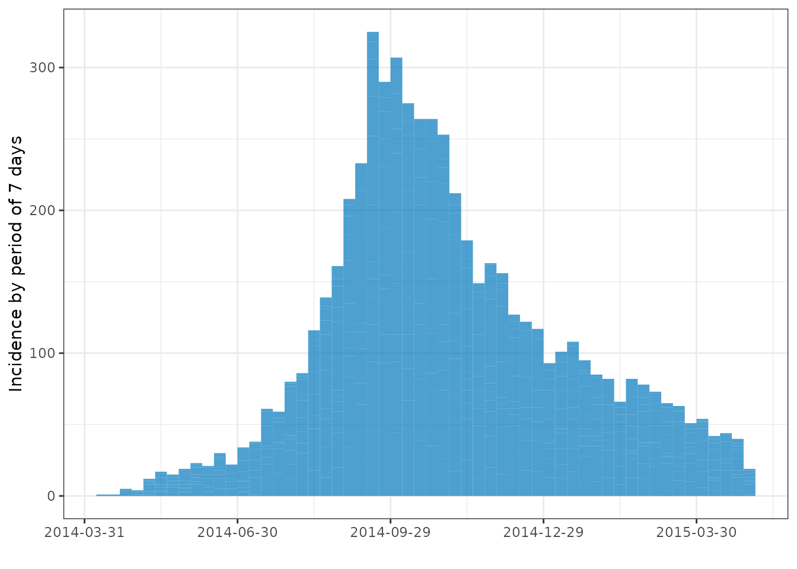
Note, however, that the groups are still present just hidden by the default border coloring:
plot(i, color = "white")
#> plot() can only stack/dodge by one variable.
#> For multi-facet plotting try facet_plot()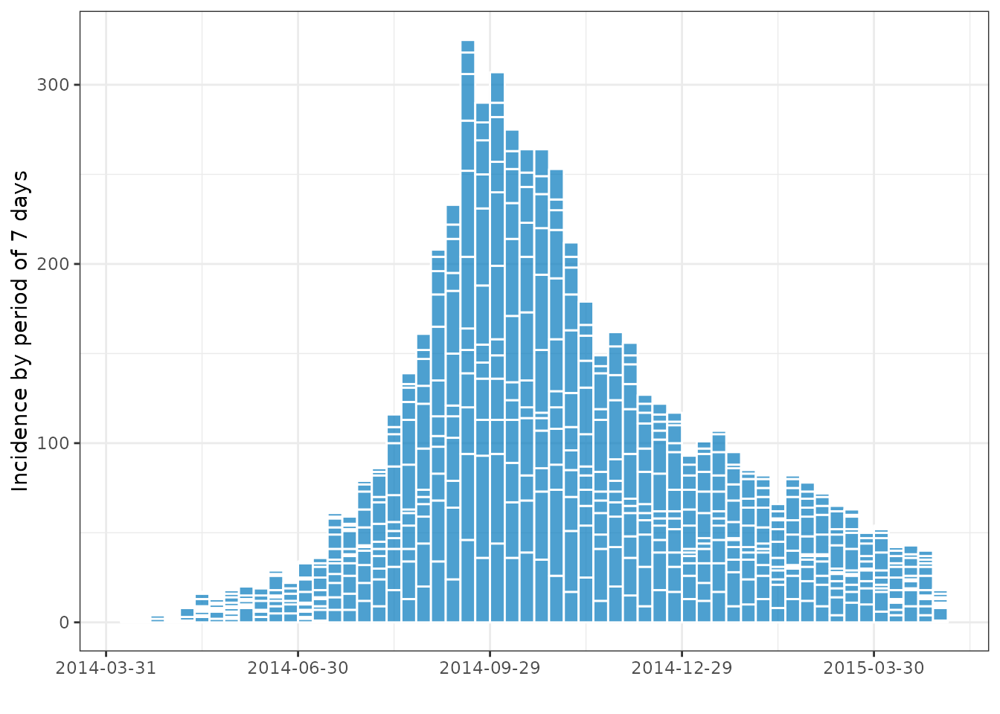
Additional arguments
plot.incidence2() is designed for a high level of
customization without needing knowledge of ggplot2. To this
end, there are multiple arguments that can be provided which have been
set to sensible defaults. Some common changes you may wish to make are
illustrated below (for a full description of arguments check out the
accompanying help file ?plot.incidence2).
We can easily fill the plot according to the groups present or a colour of our choosing:
plot(i, fill = gender)
#> plot() can only stack/dodge by one variable.
#> For multi-facet plotting try facet_plot()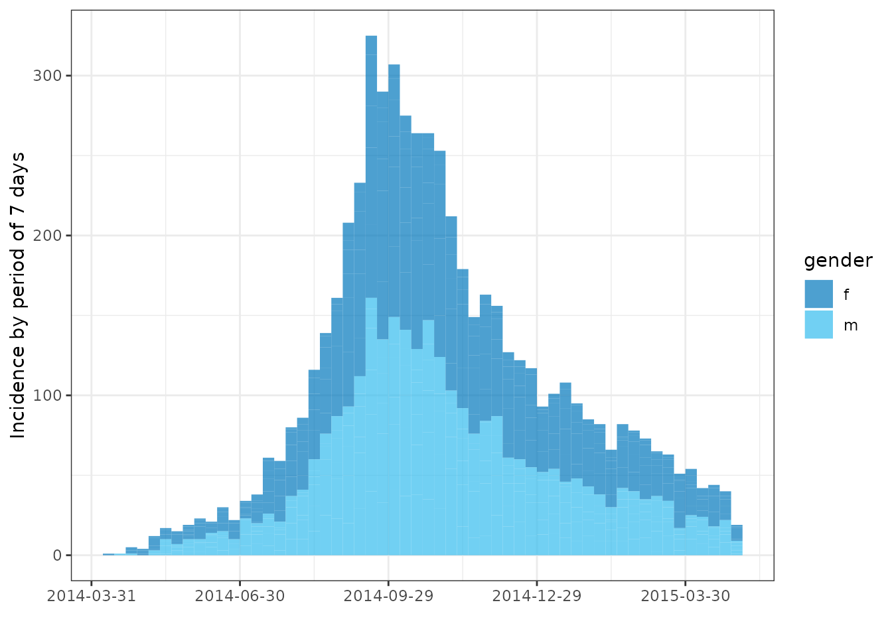
plot(i, fill = hospital, legend = "bottom")
#> plot() can only stack/dodge by one variable.
#> For multi-facet plotting try facet_plot()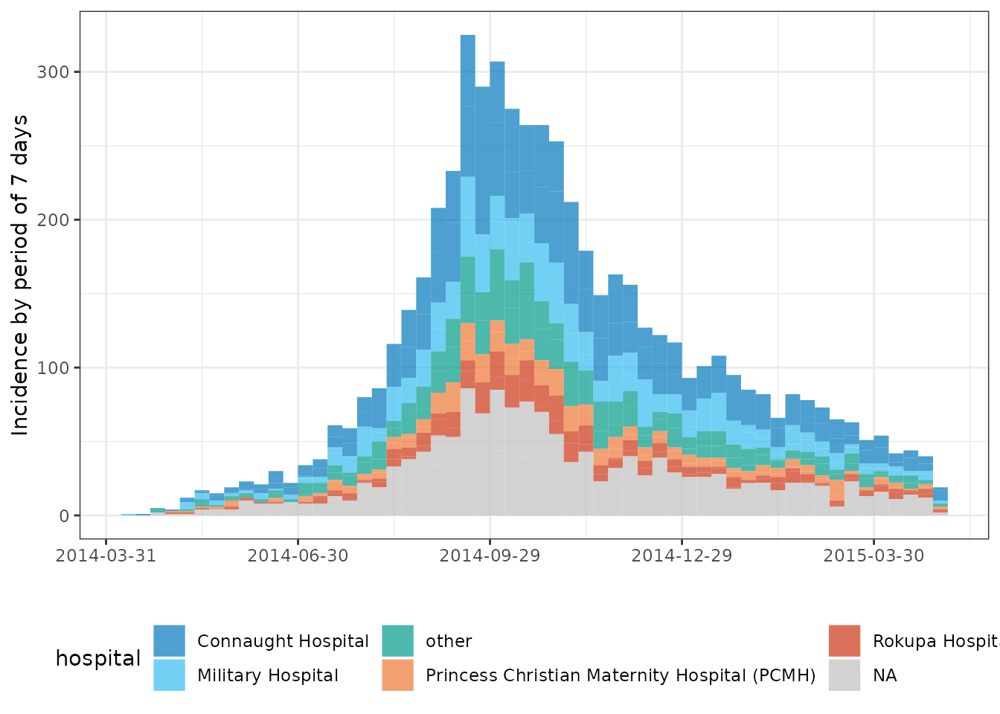
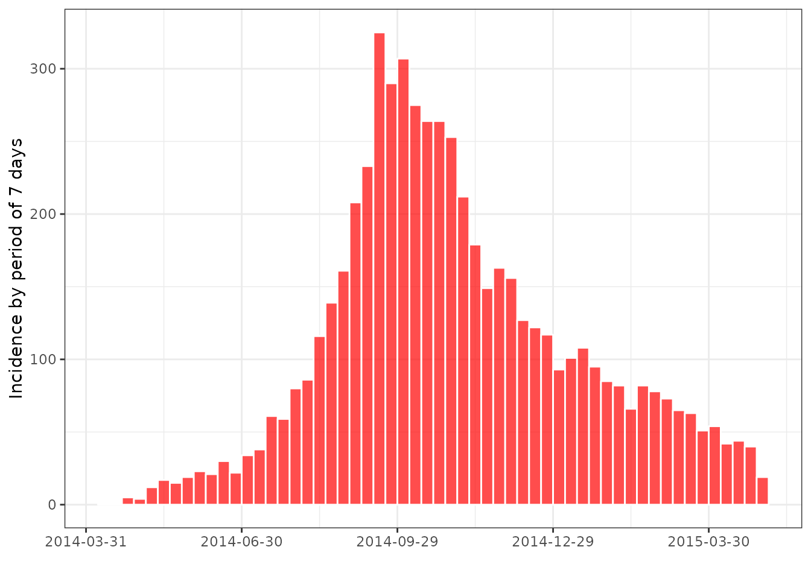
Sometimes we may wish to change rotation of the x-axis and this can be done by passing an additional angle argument:
plot(i, angle = 45)
#> plot() can only stack/dodge by one variable.
#> For multi-facet plotting try facet_plot()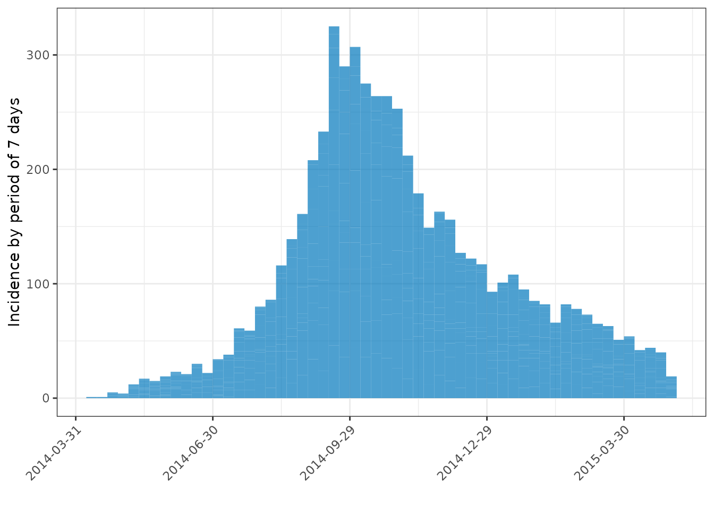
Applying the style of European Programme for Intervention Epidemiology Training (EPIET)
For small datasets it is convention of EPIET to display individual
cases as rectangles. It can be done by doing two things: first, adding
using the option show_cases = TRUE with a white border. We
also add coord_equal = TRUE which forces each case to be a
square.
i_epiet <- incidence(dat[160:180, ], date_index = date_of_onset)
plot(i_epiet, color = "white", show_cases = TRUE, angle = 45, size = 10, n_breaks = 20)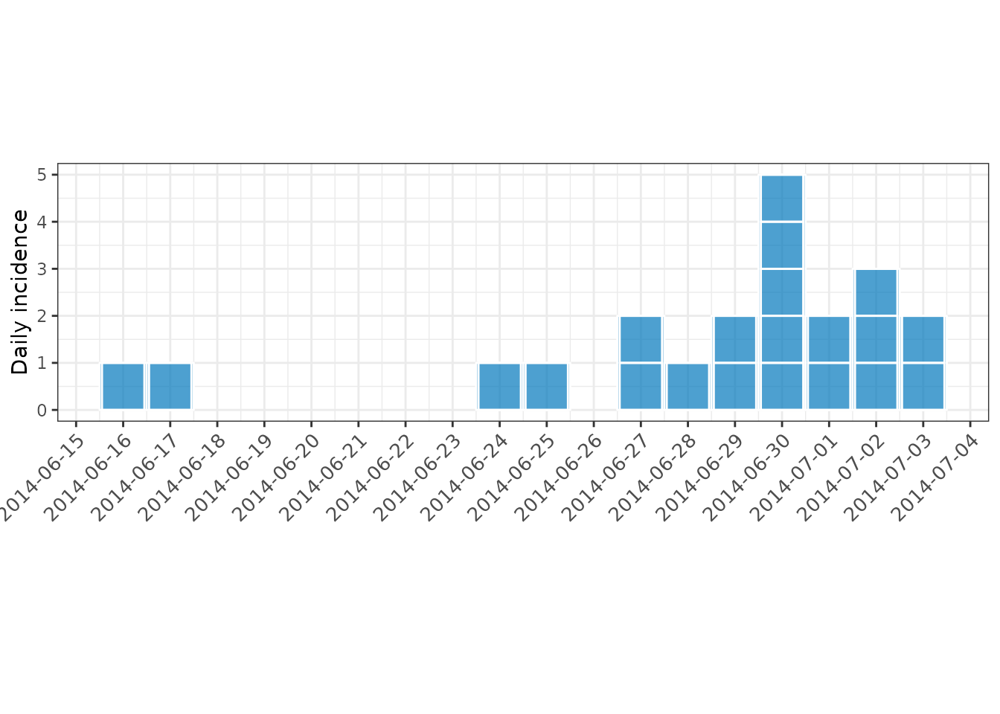
facet_plot()
With stacked plots it can be difficult to ascertain difference
between groups. For this reason we provide users the ability to make
faceted plots with the facet_plot.incidence2() function.
This function takes similar arguments to plot but includes
an additional facet argument:
facet_plot(i, facets = gender, n_breaks = 3)
facet_plot(i, facets = hospital, fill = gender, n_breaks = 3, nrow = 4)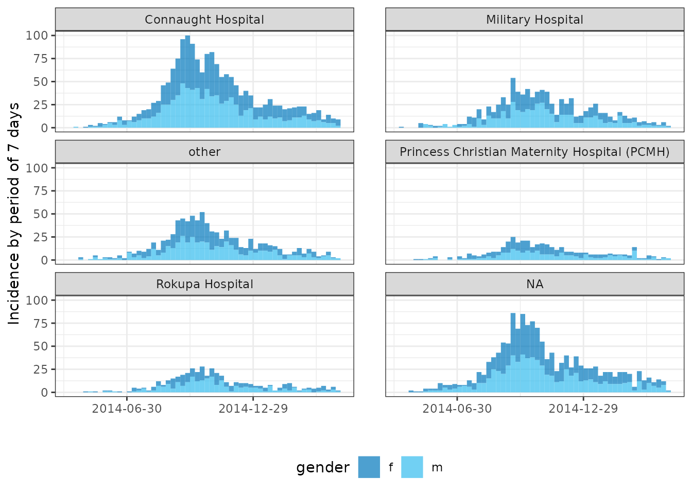
ii <- regroup(i, gender)
facet_plot(ii, facets = gender, fill = "grey", color = "white")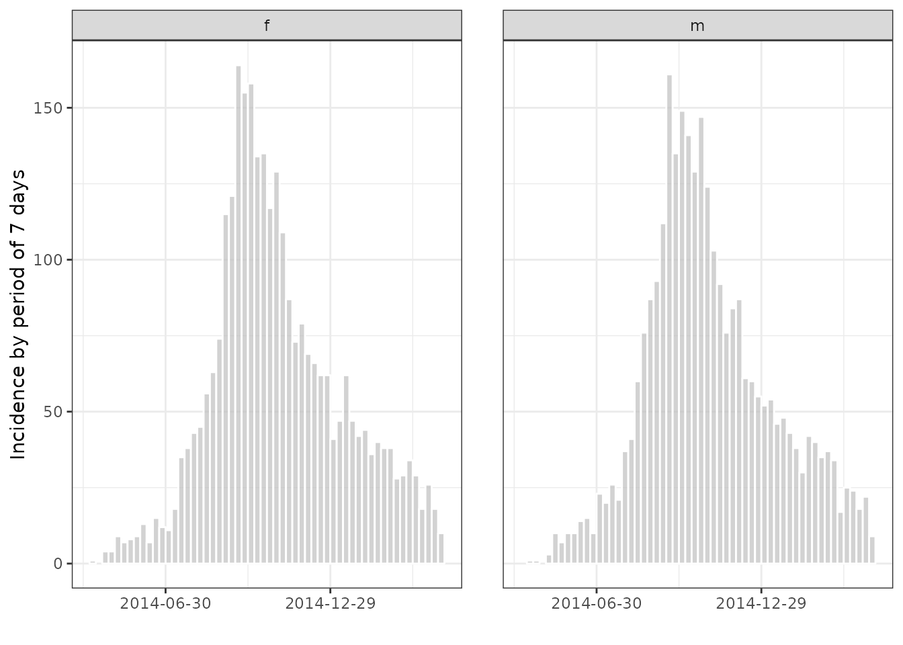
Miscellaneous
Changing colors
The default palette
A color palette is a function which outputs a specified number of
colours. By default, the colour used in incidence is called
vibrant(). Its behaviour is different from usual palettes,
in the sense that the first 6 colours are not interpolated:
par(mfrow = c(2, 1), mar = c(4,2,1,1))
barplot(1:6, col = vibrant(6))
barplot(1:20, col = vibrant(20))
#> Using more colors (20) than this palette can handle (6); some colors will be interpolated.
#> Consider using `muted` palette instead?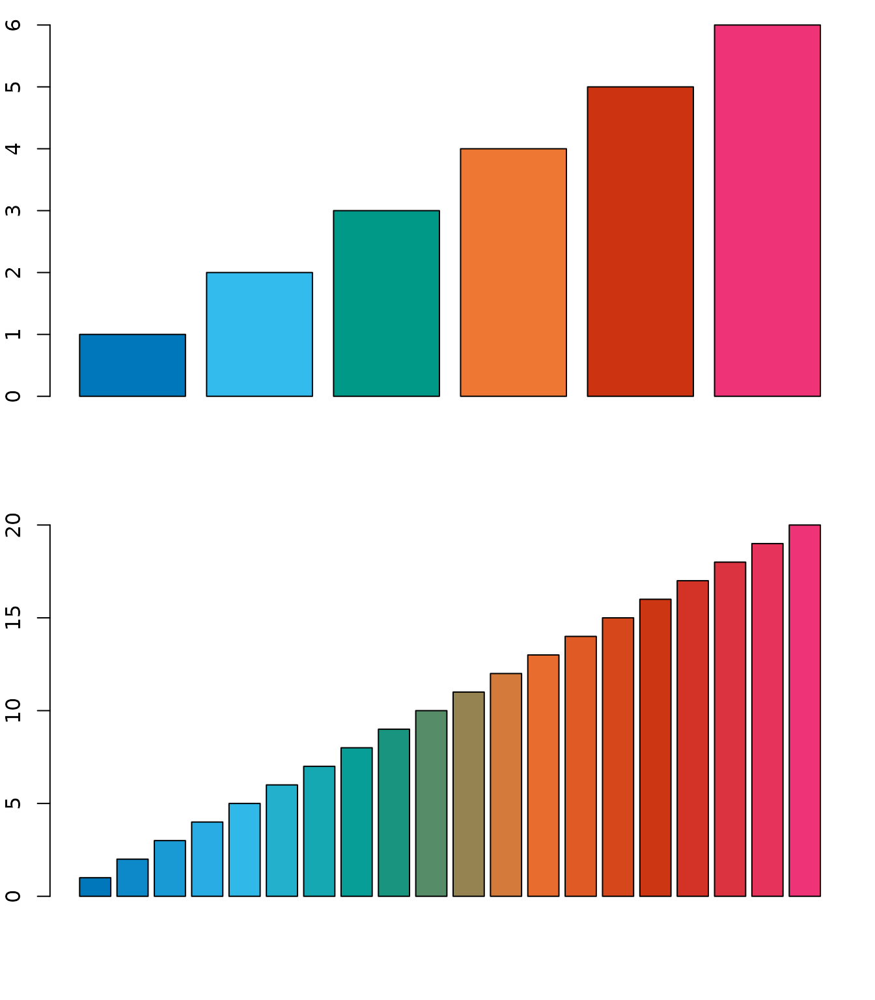
We also provide a second palette called muted() where
the first 9 colours are not interpolated:
par(mfrow = c(2,1), mar = c(4,2,1,1))
barplot(1:9, col = muted(9))
barplot(1:20, col = muted(20))
#> Using more colors (20) than this palette can handle (9); some colors will be interpolated.
Using different palettes
Other color palettes can be provided via col_pal.
Various palettes are part of the base R distribution, and many more are
provided in additional packages. We provide a couple of examples
below:
ih <- regroup(i, hospital)
plot(ih, fill = hospital, col_pal = rainbow, n_breaks = 3) # see ?rainbow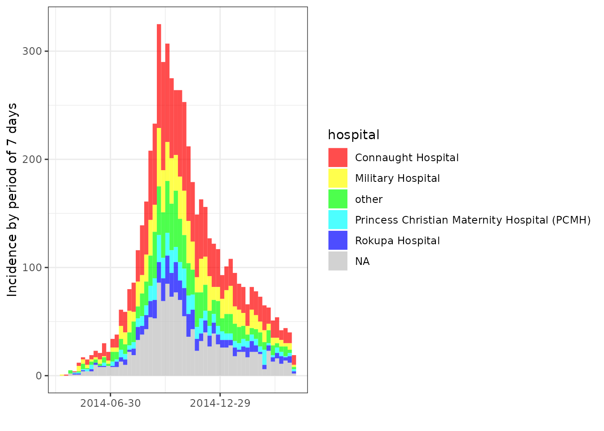
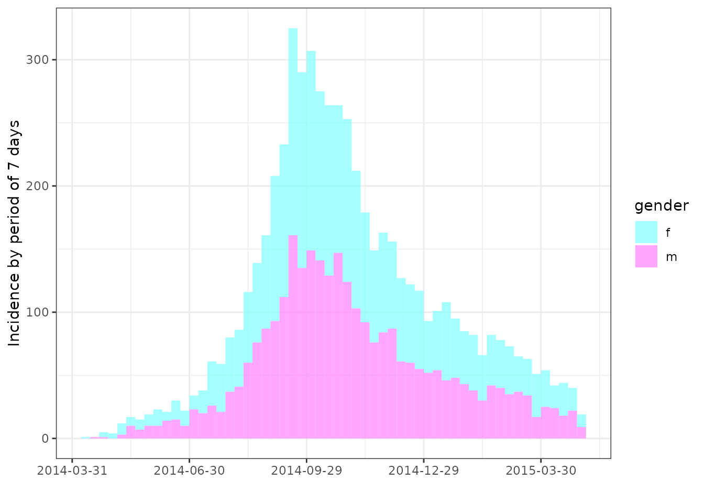